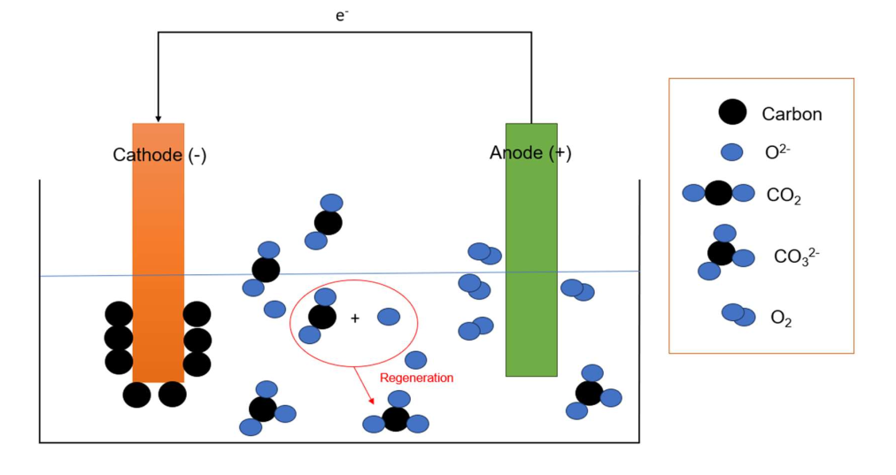
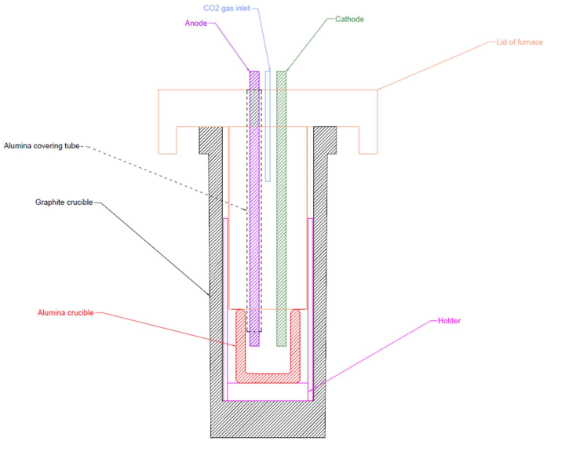
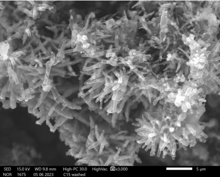
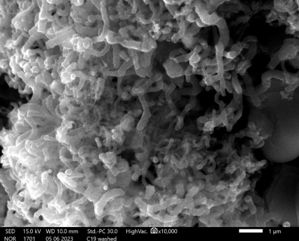
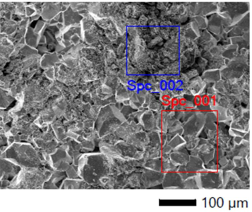

CO2 Captured using Molten Salt Carbonate Electrolysis
This is my Master’s Thesis at Tampere University
Applied Skills
AutoCAD 3D
CO2 Captured using Molten Salt
Research
Scientific Writing
Experimental Design
CO2 capture via electrolysis in molten salt is one of the methods that draws attention of scientists and researchers due to its valuable product and sustainability. The basic idea of this method is to use molten salts, with the help from anode and cathode, to capture and convert CO2 to valuable carbon-products such as carbon nanofiber (CNF), carbon nano onions (CNO), or carbon nanotubes (CNT). (Wu et al. 2017) Nevertheless, this technology has drawback. Several research showed that there were heavy corrosions on the anode used in molten salt electrolysis (Wu et al., 2017; Tang et al., 2018). Besides, lithium carbonate, which is mainly used in molten salt electrolysis, is becoming scarce (Reuter 2022). Hence, new carbonate salt and a suitable anode material should be researched to cope with the issue of corrsion and scarcity of lithium carbonate.
The main aim of this thesis work is to find suitable and inexpensive materials for electrodes to hold off the corrosion during molten salt electrolysis process. In addition, a system for molten carbonate salt electrolysis is designed and constructed for testing the materials in a laboratory scale system. Furthermore, the growth of CNT is investigated by zinc coated iron electrode to see if iron can catalyze the formation of CNT.
This thesis work is part of Hydrogen and Carbon Value Chains in Green Electrification (HYGCEL) project, in which new value chains from the development of Power-to-X (P2X) market was identified, plus, a guidance for electricity and hydrogen-based infrastructure should be examined. The work is in work package 5 (WP5), which concentrates on techno-economy of solid carbon products. The project is a collaborative project between Tampere University and Lappeenranta-Lahti University of Technology.
Mechanism of CO2 capture and reduction using molten carbonate salt
In direct reduction of CO2 to carbon, CO2 is converted directly to elemental carbon on the cathode during electrolysis of molten salt via a three-step electrochemical-chemical-electrochemical CO2 reduction (Ijije et al., 2014)
1st step:
CO2 + 2e- <-> CO22- (1)
2nd step:
CO22- -> CO + O2- (2)
3rd step:
CO + 2e- -> C + 2 CO32- (3)
Overall reaction:
3 CO2 + 4e- -> C + 2 CO32- (4)

Figure 1. Illustration of the reduction of CO2 to carbon
Experimental methods
The experimental system was designed for specific purposes. Several experiments were done to test the durability of anodes and formation of carbon products using different combination of carbonate salt. The anodes which were used in this thesis were nickel, tin dioxides (SnO2), and galvanized steel. The combination of salt used in this experiment were Li2CO3 and Na2CO3-K2CO3-CaCO3.
Example Results

Preliminary design for a part of experimental systems

SEM photo of carbon products when galvanized steel (cathode) and tin dioxide (anode) were used in Li2CO3

SEM photo of carbon products when nickel (cathode) and tin dioxide (anode) were used in CaCO3-Na2CO3-K2CO3

SEM photo of the surface of SnO2 for corrosion analysis
References
Ijije, H. V., Lawrence, R. C., Chen, G. Z. (2014a). Carbon electrodeposition in molten salts: electrode reaction and application. RSC advances. Vol. 4(67), pp. 35808 – 35817.
Tang, D., Zheng, K., Yin, H., Mao, X., Sadoway, D. R., Wang, D. (2018). Electrochemical growth of a corrosion-resistant multi-layer scale to enable an oxygen-evolution inert anode in molten carbonate. Electrochimica acta. Vol. 279, pp. 250 – 257
Wu, H., Li, Z., Ji, D., Liu, Y., Yi, G., Yuan, D., Wang, B., Zhang, Z. (2017). Effect of molten carbonate composition on the generation of carbon material. RSC advances. Vol. 7(14), pp. 8467 – 8473